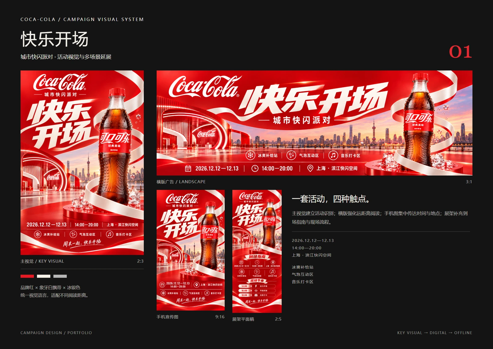
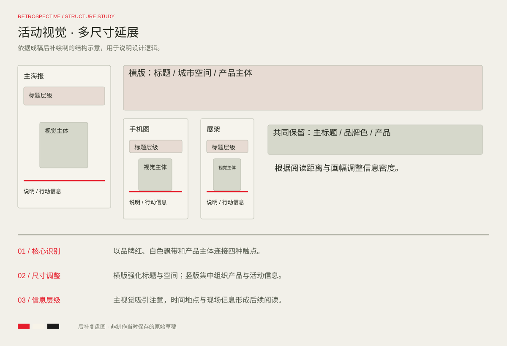

PROJECT 02 / CAMPAIGN VISUAL
快乐开场
可口可乐 · 活动视觉与场景延展
以品牌红、白色飘带与城市空间为视觉线索，在主海报、横版广告、手机宣传图和线下展架中延续统一的活动识别。

完整设计 / FULL PROJECT点击图片放大查看
DESIGN REVIEW / STRUCTURE STUDY
方案复盘与版式推演
基于当前成稿后补绘制的结构示意，用于解释信息层级、构图与视觉延展；此图为方案复盘，不代表制作当时保存的原始草稿。

核心识别
以品牌红、白色飘带和产品主体连接四种触点。
尺寸调整
横版强化标题与空间；竖版集中组织产品与活动信息。
信息层级
主视觉吸引注意，时间地点与现场信息形成后续阅读。